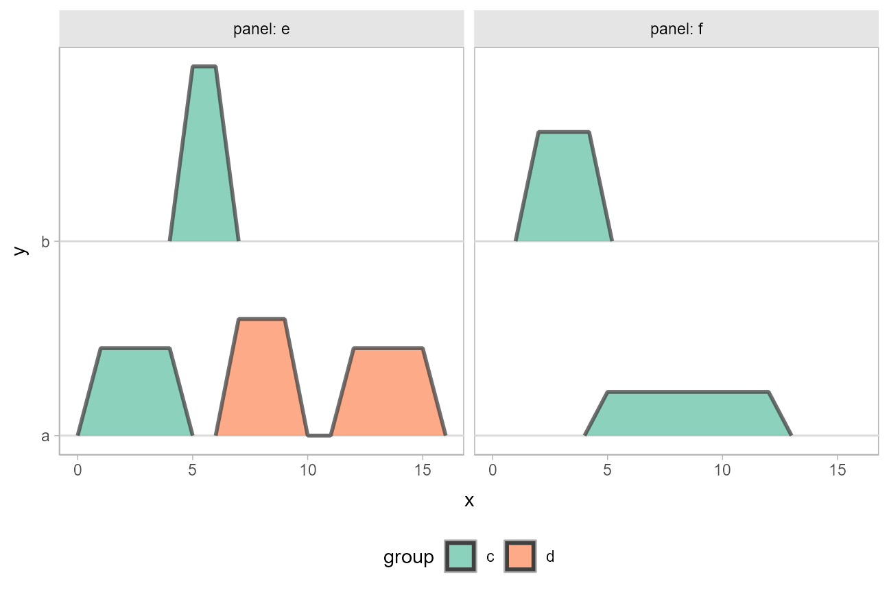
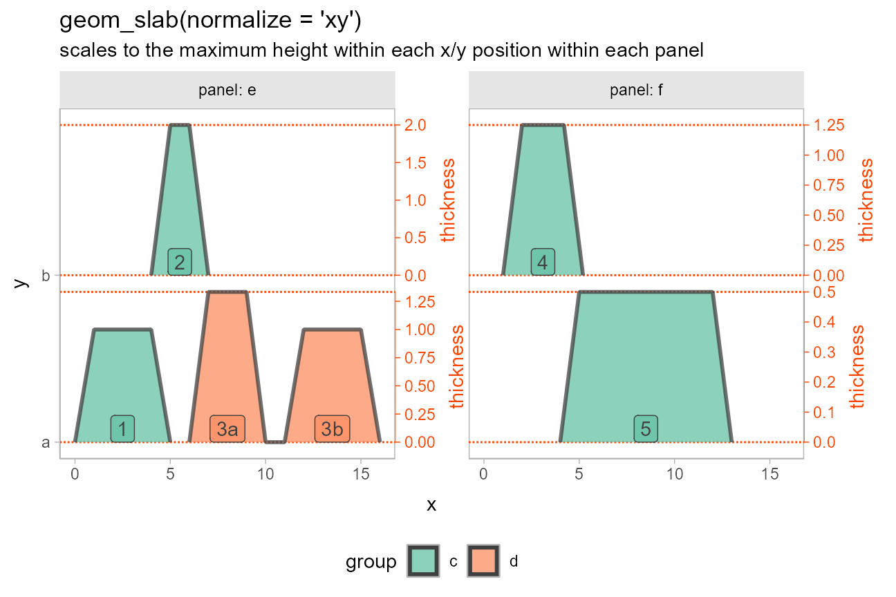
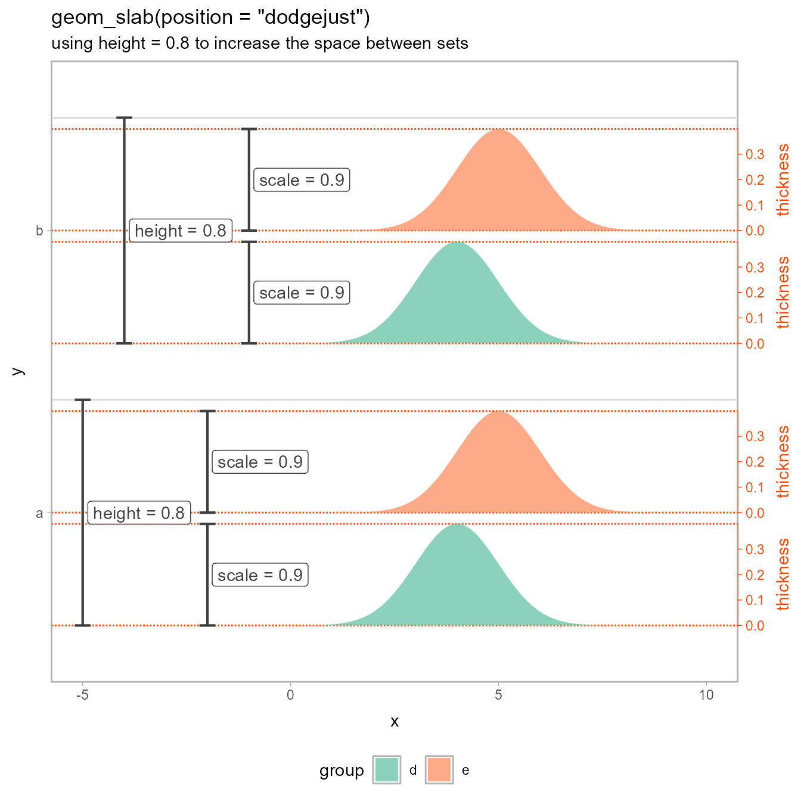

Introduction
This vignette describes the thickness scale / aesthetic
used by the slab+interval family of geoms and stats in
ggdist (see vignette("slabinterval") for more
on that family).
Note: this article makes use of ggdist subguides for labeling purposes, which requires ggdist ≥ 3.3.2.
The thickness scale
The thickness scale is a positional subscale used by
geom_slabinterval() to construct slabs, which are
ribbon-like geometries with a fixed baseline and a height determined by
the thickness aesthetic. The thickness scale
is most typically used via stat_slabinterval() and its
derivative stats, which allow you to map distribution functions (like
densities or CDFs) onto the thickness aesthetic.
thickness exists as a scale separate from the typical
x and y aesthetics (or even
width/height,
xmin/xmax, or
ymin/ymax) so that it is easy to plot multiple
slabs on the same plot, each with its own separate
thickness subscale. For example:
df = tibble(
h = c(0,1,1,0, 0,2,2,0, 0,4/3,4/3,0, 0,1,1,0, 0,1.25,1.25,0, 0,.5,.5,0),
x = c(0,1,4,5, 4,5,6,7, 6,7,9,10, 11,12,15,16, 1,2,4.2,5.2, 4,5,12,13),
y = rep(c("a", "b", "a", "a", "b", "a"), each = 4),
group = rep(c("c", "c", "d", "d", "c", "c"), each = 4),
panel = rep(c("e", "e", "e", "e", "f", "f"), each = 4),
name = rep(c(1, 2, "3a","3b", 4, 5), each = 4)
)
df_group = df %>%
summarise(x = mean(x), .by = c(name, group, panel, y))
df %>%
ggplot(aes(x = x, y = y, fill = group, thickness = h)) +
geom_slab(color = "gray25", alpha = 0.75) +
scale_y_discrete(expand = expansion(add = 0.1)) +
scale_fill_brewer(palette = "Set2") +
facet_grid(cols = vars(panel), labeller = "label_both") +
labs("geom_slab() with default thickness scaling") +
theme(
legend.position = "bottom",
panel.grid.major.y = element_line(color = "gray85"),
panel.background = element_rect(color = "gray70", fill = NA)
)
In the above plot, the values assigned to the thickness
aesthetic are all scaled onto a common scale, and the slabs are
positioned with their baselines at the y value specified
for each slab.
Adjusting normalization within one geometry
The default thickness scaling shown above corresponds to the
normalize = "all" option of geom_slab(). It
uses the same scale for all slabs, scaling them according the the
maximum height of the tallest slab.
The normalize parameter provides a set of options that
define a hierarchy of increasingly more specific sets within which to
scale the slabs:
-
"all"scales according to the maximum over all slabs; -
"panels"scales according to the maximum within each panel (facet); -
"xy"scales according to the maximum within each x/y position within each panel; and -
"groups"scales according to the maximum within each group within each x/y position within each panel.
The x/y position referred to above is the unique
x or y position of the slab on its
off-axis. For example, this would be the unique y positions in
the above chart ("a" or "b"), because the
chart is drawn with a horizontal orientation.
normalize = "all"
We can see how normalization affects the scales by annotating the previous plot of the default normalization settings:
subguide_orangered = subguide_outside(
title = "thickness",
position = "right",
theme = theme_ggdist() + theme(
text = element_text(color = "orangered"),
axis.line.y = element_line(color = "orangered"),
axis.ticks.y = element_line(color = "orangered"),
axis.text.y = element_text(color = "orangered")
)
)
plot_slabs_with_scales = function(..., subguide = subguide_orangered) {
df %>%
ggplot(aes(x = x, y = y, fill = group)) +
geom_hline(yintercept = c(1,1.9, 2,2.9), color = "orangered", linetype = "11", linewidth = 0.5) +
geom_slab(
aes(thickness = h),
subguide = subguide,
alpha = 0.75,
color = "gray25",
...
) +
geom_label(
aes(label = name),
data = df_group,
color = "gray25",
alpha = 0.75,
vjust = 0,
show.legend = FALSE
) +
scale_y_discrete(expand = expansion(add = 0.1)) +
scale_fill_brewer(palette = "Set2") +
facet_grid(cols = vars(panel), labeller = "label_both") +
theme(
plot.margin = margin(5.5, 50, 5.5, 5.5),
panel.spacing.x = unit(40, "pt"),
legend.position = "bottom",
panel.background = element_rect(color = "gray70", fill = NA)
)
}
plot_slabs_with_scales(normalize = "all") +
labs(
title = "geom_slab(normalize = 'all')",
subtitle = "default normalization settings"
)Notice how the minimum and maximum value on each
thickness subscale is the same: it is the maximum thickness
value over all slabs; i.e. the height of the tallest slab in the data.
This is a conservative default setting that ensures all slabs in the
same geometry are scaled together.
normalize = "panels"
Sometimes you may have separate panels within which you want to scale
all slabs together. You can do this using
normalize = "panels":
plot_slabs_with_scales(normalize = "panels") +
labs(
title = "geom_slab(normalize = 'panels')",
subtitle = "scales to the maximum height within each panel"
)Notice how the thickness scales inside a given
panel are the same: panel "e" has a maximum
thickness of 2 (the height of slab
2) and panel "f" has a maximum
thickness of 1.25 (the height of slab
4). All other slabs within the same panel are scaled
accordingly.
normalize = "xy"
Often it is useful to scale slabs on the same x or
y position together, where whether we scale within
x or y is determined by the
orientation of the geometry. You can do this using
normalize = "xy":
plot_slabs_with_scales(normalize = "xy") +
labs(
title = "geom_slab(normalize = 'xy')",
subtitle = "scales to the maximum height within each x/y position within each panel"
)
In this plot, because orientation = "horizontal",
normalize = "xy" scales within each unique y
position; i.e. the values "a" and "b".
Normalization settings are hierarchical, so it uses the maximum
thickness value within each y position within each
panel. Thus:
- slab
2is scaled to its maximum of2.0; - slabs
1,3a, and3bare scaled to their maximum of1.33(the height of slab3a); - slab
4is scaled to its maximum of1.25; and - slab
5is scaled to its maximum of0.5.
normalize = "groups"
Finally, it can be useful to scale all slabs according to their
maximum height. You can do this using
normalize = "groups".
Notably, if you have multiple groups at the same x/y position, you
cannot combine normalize = "groups" with any thickness
subguide except "none", because the thickness subguides on
each y value will not be unique. Hence this error:
plot_slabs_with_scales(normalize = "groups")## Error in `geom_slab()`:
## ! Problem while converting geom to grob.
## ℹ Error occurred in the 2nd layer.
## Caused by error in `fun()`:
## ! Cannot draw a subguide for the thickness axis when multiple slabs with different normalizations are
## drawn on the same axis.Thus for this example we will have to omit the thickness
subguide:
plot_slabs_with_scales(normalize = "groups", subguide = "none") +
labs(
title = "geom_slab(normalize = 'groups')",
subtitle = "scales to the maximum height within each group within each x/y position within each panel"
)Notice how all groups are scaled to have their maximum height at the
maximum thickness value; thus, slab 1 and slab
3b are no longer the same height.
Why is slab 3b not scaled to touch the maximum
thickness? geom_slab() technically only
considers values in different groups to be in different slabs, so slab
3a and 3b are actually parts of the same slab,
as indicated by the unbroken outline they are drawn with.
Sharing thickness scales across multiple
geometries
Sometimes we want to use different geometries to plot slabs on the same scale. This often happens when plotting priors and posteriors, but may happen in other cases as well.
Here is a prior and posterior plotted using separate geometries, with their thickness scales annotated:
df_prior_post = data.frame(
prior = dist_normal(0, 1),
posterior = dist_normal(0.1, 0.3)
)
prior_post_plot = df_prior_post %>%
ggplot() +
stat_slab(
aes(xdist = posterior),
subguide = subguide_inside(title = "posterior thickness")
) +
stat_slab(
aes(xdist = prior),
color = "orangered",
fill = NA,
subguide = subguide_orangered(title = "prior thickness", just = 0, label_side = "inside")
) +
scale_y_continuous(breaks = NULL) +
theme(panel.background = element_rect(color = "gray70", fill = NA))
prior_post_plot +
labs(
title = "two different slab geometries",
subtitle = "thickness scales are not shared across geometries by default"
)
Notice how the two geometries have different thickness
scales. If we add scale_thickness_shared() to the plot,
they will be given the same scale:
prior_post_plot +
scale_thickness_shared() +
labs(
title = "two different slab geometries",
subtitle = "using scale_thickness_shared() to share thickness scale across geometries"
)
scaled_thickness_shared() works by scaling values and
then tagging them with a special thickness() datatype. That
type carries information about the original scale limits (used to draw
subguides), and also tells the slab geometries that they should not do
any further normalization. Thus, when you use
scale_thickness_shared(), the normalize
parameter on each slab geometry is ignored.
Spacing slabs with height and scale
The thickness aesthetic is drawn within a subset of the
bounding box of geom_slab() determined by the
scale aesthetic, which defaults to 0.9:
cap = arrow(angle = 90, length = unit(5, "pt"), ends = "both")
scale_plot = function(scale = 0.9) {
tibble(d = dist_normal(c(4,5)), y = c("a","b")) %>%
ggplot(aes(xdist = d, y = y)) +
geom_hline(
yintercept = c(1, 1 + scale, 2, 2 + scale),
color = "orangered", linetype = "11", linewidth = 0.5
) +
stat_slab(scale = scale, subguide = subguide_orangered) +
annotate("segment", x = c(-5,-4), xend = c(-5,-4), y = c(1,2), yend = c(2,3),
arrow = cap, linewidth = 0.75, color = "gray25"
) +
annotate("label", x = c(-5,-4), y = c(1.5, 2.5),
label = "height = 1", hjust = -0.05, color = "gray25"
) +
annotate("segment", x = c(-2,-1), xend = c(-2,-1), y = c(1,2), yend = c(1,2) + scale,
arrow = cap, linewidth = 0.75, color = "gray25"
) +
annotate("label", x = c(-2,-1), y = c(1,2) + scale/2,
label = paste("scale =", scale), hjust = -0.05, color = "gray25"
) +
scale_y_discrete(expand = expansion(add = 0)) +
scale_x_continuous(limits = c(-5, 10)) +
theme(
plot.margin = margin(5.5, 40, 5.5, 5.5),
panel.background = element_rect(color = "gray70")
) +
coord_cartesian(clip = "off")
}
scale_plot(scale = 0.9) +
labs(
title = "geom_slab()",
subtitle = "using default height = 1 and scale = 0.9"
)
This allows us to adjust the spacing between slabs using
scale:
scale_plot(scale = 0.65) +
labs(
title = "geom_slab()",
subtitle = "using scale = 0.65 to increase spacing between slabs"
)
Spacing dodged slabs
height and scale are particularly useful
when combined with dodging, as modifying height allows you
to change the spacing between sets of slabs with the
same y value, and modifying scale allows you to change the
spacing within sets:
dodged_scale_plot = function(height = 1, scale = 0.9, add = 0) {
baselines = c(1 - height/2, 1, 2 - height/2, 2)
tibble(
d = dist_normal(c(4,5,4,5)),
y = c("a","a","b","b"),
group = c("d","e","d","e")
) %>%
ggplot(aes(xdist = d, y = y, fill = group)) +
geom_hline(yintercept = c(1,2) + height/2, color = "gray85") +
geom_hline(
yintercept = c(baselines, baselines + height/2*scale),
color = "orangered",
linetype = "11",
linewidth = 0.5
) +
stat_slab(
height = height, scale = scale,
subguide = subguide_orangered, position = "dodgejust",
alpha = 0.75
) +
annotate("segment",
x = c(-5,-4), xend = c(-5,-4),
y = c(1,2) - height/2, yend = c(1,2) + height/2,
arrow = cap, color = "gray25", linewidth = 0.75
) +
annotate("label", x = c(-5,-4), y = c(1, 2),
label = paste("height =", height), hjust = -0.05,
color = "gray25"
) +
annotate("segment", x = c(-2,-2,-1,-1), xend = c(-2,-2,-1,-1),
y = baselines, yend = baselines + scale * height/2,
arrow = cap, color = "gray25", linewidth = 0.75
) +
annotate("label", x = c(-2,-2,-1,-1),
y = baselines + scale*height/4, label = paste("scale =", scale),
hjust = -0.05, color = "gray25"
) +
scale_y_discrete(expand = expansion(add = add)) +
scale_x_continuous(limits = c(-5, 10)) +
scale_fill_brewer(palette = "Set2") +
theme(
plot.margin = margin(5.5, 40, 5.5, 5.5),
panel.background = element_rect(color = "gray70"),
legend.position = "bottom"
) +
coord_cartesian(clip = "off")
}
dodged_scale_plot(height = 1, scale = 0.9, add = 0) +
labs(
title = 'geom_slab(position = "dodgejust")',
subtitle = "using default height = 1 and scale = 0.9"
)If we decrease height, it increases the space
between sets of slabs with the same y
value:
dodged_scale_plot(height = 0.8, scale = 0.9, add = 0.6) +
labs(
title = 'geom_slab(position = "dodgejust")',
subtitle = "using height = 0.8 to increase the space between sets"
)
And if we decrease scale, it increases the spacing
within sets of slabs with the same y
value:
dodged_scale_plot(height = 0.8, scale = 0.65, add = 0.6) +
labs(
title = 'geom_slab(position = "dodgejust")',
subtitle = "using height = 0.8 and scale = 0.65"
)Ridgeline plots with height > 1
Finally, height can also be greater than 1,
which can be used to create overlapping slabs, as in so-called ridgeline
plots:
data.frame(
d = dist_normal(10:1/4, 1 + 10:1/15),
y = letters[1:10]
) %>%
ggplot(aes(xdist = d, y = y)) +
stat_slab(height = 3, color = "gray25") +
labs(
title = "geom_slab()",
subtitle = "using height > 1 to create ridgeline plots"
)